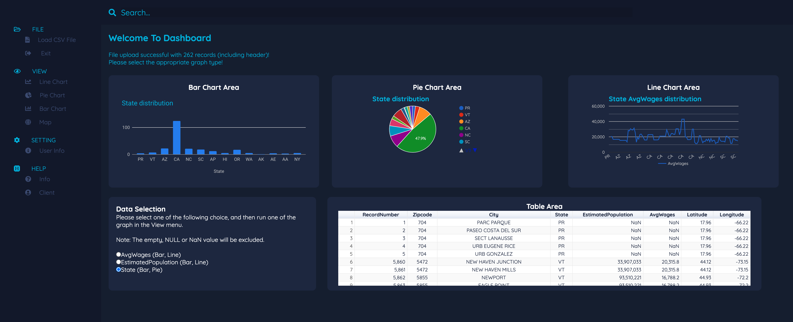

Educations
BA, Mathematical Sciences (Data Analytics) Wenzhou-Kean University & Kean University Aug.2016 - Jan.2021
GPA: 3.81/4.00
Relevant coursework: Big Data Computing, Probability and Math Statistics, Applied Statistics, Data Mining, Machine Learning, Mathematical Statistics
Honors: 1. Awarded the Dean’s Honor List for the Fall 2018 to the Fall 2020
2. the Fourth Place in the Business Plan Competition 2019
Minor, Computer Science
GPA: 3.98/4.00
Relevant coursework: Data Structures, Computer Operating Systems, Python Programming, Database Management Systems, Analysis of Algorithms
MS, Computer Science Northeastern University Jan.2021 - Jan.2021
Relevant coursework:Algorithms, Foundations of Artificial Intelligence
Skills & Knowledge
Technical: Java, Python, R Language, Database, PHP, HTML, CSS, JavaScript, Adobe Audition, Adobe After Effect, Adobe Photoshop, Adobe Premiere, MS Office
Languages: Native in Mandarin, and fluent in English
Statistical: Linear Regression, Logistic Regression, Multivariate Analysis, Hypothesis Testing, Time Series, Correlation Analysis, Data Visualization, and Data Cleaning
Data Science: Principal Component Analysis, Clustering, Decision Trees
Experiences
Code Samurai
A peer-to-peer tutoring program for CS/IT students to solve their questions about coding. For the group review session, teaching some statistic functions as applying to Python.
Researchs & Projects
Building a Database Management Systems
Building a Dashboard for the Specific data 
The Model of Boston Airbnb Rental Prices Based on Stepwise Regression by Python
Using Time Series to Analysis AAPL Stock by R Language
Data Visualization of NYC Airbnb by R Language
Mathematical model for describing the financial cost of drug abuse in the State Connecticut 2012-2017
Extracurricular Activities
Wenzhou-Kean University Tennis Team
Team Member
Attended routine training of the team, including strength training, technical training, and match training
Competed in the exchanges matches as the team player, and won the 3rd Place in the Tennis match of The Second “XJTLU-
CUP” Sino-Foreign International Sport Tournaments
KIWI Campus Media Club
TV Station Editor
Assisted the post-production work of TV Station by producing promotional videos for the club official website called
9SCORES
club-held activities such as Paranoia Music Festival
edited 11 videos for daily TV programs